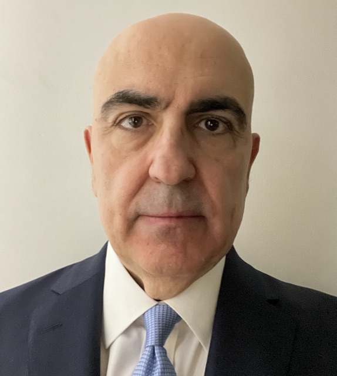

Speakers vary by city. See each city page for its confirmed line-up: Newcastle, Manchester, Cambridge and London.

The Middle East Association
Nicholas Hopton is Director General of the Middle East Association and a former British Ambassador, with a diplomatic career spanning Europe, the Middle East and Latin America. He brings deep regional expertise and decades of public service experience to the Roadshow's leadership.
Alongside his work at the MEA, Nicholas is a published author and commentator, writing on politics, culture and history for publications including the Times Literary Supplement.
Department for Business & Trade
Callum is an International Markets Advisor with the UK Department for Business and Trade (DBT) in Riyadh, supporting UK companies pursuing opportunities across the Middle East and Pakistan.
Working closely with exporters, government stakeholders and in-market partners, he provides expert guidance on market entry, commercial strategy and business development. His experience spans international trade, commercial advisory, business consultancy and stakeholder engagement, helping businesses identify opportunities and achieve sustainable growth in overseas markets.
Department for Business & Trade
Simon Crosby is BIST's Senior Area Lead for North East and Tees Valley, connecting business ambition with UK government support to unlock regional growth.
Simon brings 15 years of international commercial experience across engineering and consumer goods, developing markets and partnerships across Asia, Europe and North America.
Speaking in Newcastle on behalf of the Department for Business & Trade.

UK Export Finance
Joseph Chakra is Regional Head – Middle East for Origination and Client Coverage at UK Export Finance (UKEF). Before joining UKEF, Joseph was leading an advisory firm supporting Gulf, MENAT and Asia-based clients on global transactions.
Joseph previously held various senior banking roles, including as CEO of a Saudi-based investment bank, following various banking roles in the US, Asia and the UK with major financial institutions.

AEI Saudi
Adam moved to Saudi Arabia from the UK in 2008, identifying the need for an independent platform to help foreign companies navigate the Kingdom's business landscape, co-founding AEI Saudi in 2012 after a career in the IT Security industry.
With over 20 years' experience, Adam's core expertise lies in Saudi business development. He has supported over 2,500 companies, predominantly from the UK, EU, and US, on their journey to enter, succeed and thrive in the Middle East. He also advises the MEA in the UK, providing commercial guidance and regional networks.
About AEI Saudi
Founded in 2012, AEI Saudi is an independent market-entry and advisory consultancy helping international companies establish and grow their presence in Saudi Arabia. Its team guides foreign businesses through the Kingdom’s regulatory, commercial and cultural landscape as they enter one of the region’s largest markets.

Smart Currency Business
Over a near 15-year career in risk management, Chris has helped protect British businesses through periods of significant uncertainty, from Brexit and Covid-19 to the current energy crisis. With GCC currencies pegged to the US Dollar, UK businesses trading across the Middle East carry a direct GBP/USD exposure that can quietly erode margins.
Chris works closely with Smart Currency Business's Middle East-facing clients to identify and reduce this risk. He is qualified with an Investment Advice Diploma and licensed to offer regulated advice to UK corporates.
About Smart Currency Business
The UK's largest privately-owned currency provider, with over 20 years' experience. As the official treasury management partner to the MEA, their regional specialists draw on deep knowledge of the GCC and wider MENA region's currency dynamics and payment complexities.

Global Diplomacy Institute
Hatice Beton is Co-Founder of the Global Diplomacy Institute (GDI), a strategic advisory firm helping governments, investors, international organisations, and businesses navigate complex geopolitical environments and build high-impact public-private partnerships.
She specialises in business diplomacy, investment strategy, and cross-sector collaboration. She also serves as Co-Founder and Executive Director of the G20 & G7 Health and Development Partnership, leading strategic advocacy convening more than 30 leading global health organisations. She holds an MSc in Comparative Political Economy from the London School of Economics.
About Global Diplomacy Institute
The Global Diplomacy Institute (GDI) is a political and business-diplomacy advisory firm headquartered in Bahrain, with offices in Riyadh and London. It helps governments, multilateral organisations and C-suite leaders navigate complex geopolitical environments through public-private partnerships, geopolitical intelligence, investment facilitation, policy advisory and high-level convening. GDI works across trade, finance, health and development, turning strategic ambition into measurable outcomes for public and private sector clients.
Global Diplomacy Institute
Stuart Carroll is a Senior Advisor at the Global Diplomacy Institute (GDI), joining the MEA Roadshow panel in Newcastle with business-diplomacy expertise spanning the Gulf and wider region.
About Global Diplomacy Institute
The Global Diplomacy Institute (GDI) is a political and business-diplomacy advisory firm headquartered in Bahrain, with offices in Riyadh and London. It helps governments, multilateral organisations and C-suite leaders navigate complex geopolitical environments through public-private partnerships, geopolitical intelligence, investment facilitation, policy advisory and high-level convening. GDI works across trade, finance, health and development, turning strategic ambition into measurable outcomes for public and private sector clients.
Global Diplomacy Institute
Alison Raw is a Senior Advisor at the Global Diplomacy Institute (GDI), joining the MEA Roadshow panel in Manchester with business-diplomacy expertise spanning the Gulf and wider region.
About Global Diplomacy Institute
The Global Diplomacy Institute (GDI) is a political and business-diplomacy advisory firm headquartered in Bahrain, with offices in Riyadh and London. It helps governments, multilateral organisations and C-suite leaders navigate complex geopolitical environments through public-private partnerships, geopolitical intelligence, investment facilitation, policy advisory and high-level convening. GDI works across trade, finance, health and development, turning strategic ambition into measurable outcomes for public and private sector clients.
The Favour Gulf
Judy Abdullah is the founder of The Favour Gulf, a Gulf advisory practice. Raised between the UK and Saudi Arabia, she advises companies, teams and individuals on how trust forms and decisions are reached across the Gulf. Her writing and video on culture and society reach more than 70,000 people.
About The Favour Gulf
A Gulf advisory practice rooted in Saudi Arabia, helping companies, teams and individuals understand how trust forms and decisions are made across the region. Judy, raised between the UK and Saudi Arabia, advises businesses entering or operating in the Gulf and speaks on how Gulf audiences think, spend and decide. thefavourgulf.com
VG Group (Gold Sponsor)
Based in the United Arab Emirates, Heba Al Emara is a Managing Director for the Middle East, bringing first-hand regional insight to the Roadshow. She joins the speaker line-up at the MEA's London event.
About VG Group
Established in 1982, VG is an independent, Jersey-based provider of bespoke fiduciary and administration services to private clients, families, funds and institutions worldwide. The firm administers more than 1,100 structures representing over £15 billion in assets, with expertise spanning private wealth, trust and corporate administration, funds and capital markets. Its independence allows VG to act quickly and decisively, building long-term client partnerships that average more than a decade. VG Group is the Gold Sponsor of the MEA UK Roadshow.
Sovereign PPG
Jade is a Senior Sales Manager at Sovereign PPG, bringing over 10 years of experience across the UAE and wider GCC region. She specialises in building strong client relationships and delivering professional guidance tailored to each client's business requirements.
With extensive knowledge of Abu Dhabi's commercial landscape, Jade has supported the establishment of a wide range of SMEs and multinational companies across the Gulf. She holds a BA (Hons) in International Business Studies with Spanish.
About Sovereign PPG
The leading business formation and corporate services provider across the UAE, Qatar, Bahrain, Oman and Saudi Arabia, and is a registered Corporate Services Provider in the DIFC and ADGM, with specialised expertise for regulated business structures.

The Sovereign Group
Matthew is a Dubai-based business development professional with experience advising entrepreneurs, investors, internationally mobile families and business owners on international structuring, corporate services, residency solutions and private client matters. He is a Business Development Manager at The Sovereign Group, an international provider of corporate, private client and retirement planning services.
He holds the Certificate in International Trust Management from STEP and the Award in Financial Planning from the Chartered Insurance Institute.
About Sovereign PPG
The leading business formation and corporate services provider across the UAE, Qatar, Bahrain, Oman and Saudi Arabia, and is a registered Corporate Services Provider in the DIFC and ADGM, with specialised expertise for regulated business structures.

Womble Bond Dickinson
Peter Snaith is a Partner at Womble Bond Dickinson, one of the UK's leading transatlantic law firms. He brings extensive expertise in commercial and corporate law, with a particular focus on transactions and business relationships across the MENA region.
About Womble Bond Dickinson
Womble Bond Dickinson is a leading transatlantic law firm with more than 1,000 lawyers across offices in the UK and the US. It advises businesses across a broad range of sectors, with particular strength in corporate, commercial and cross-border work supporting UK companies active in the MENA region.